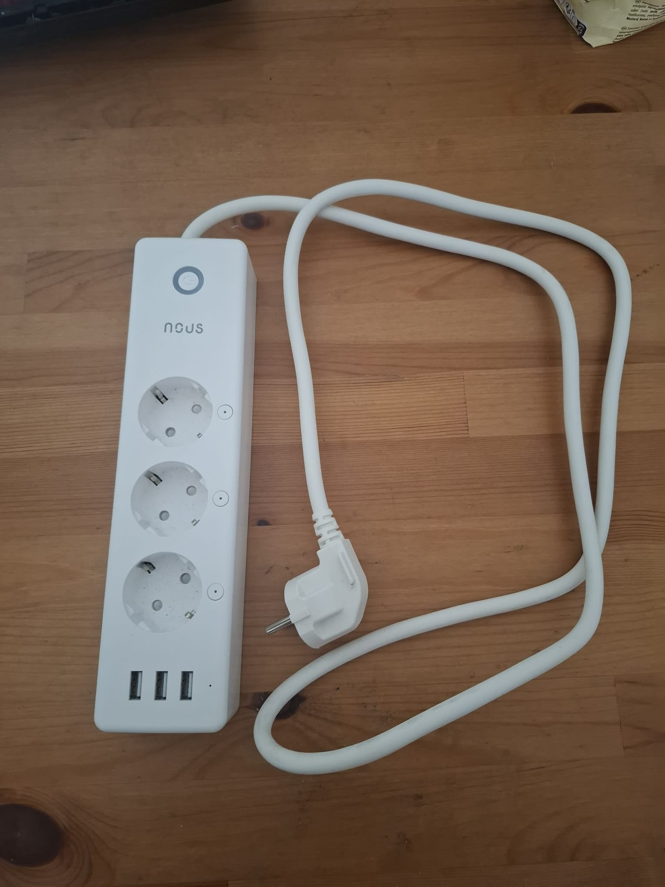
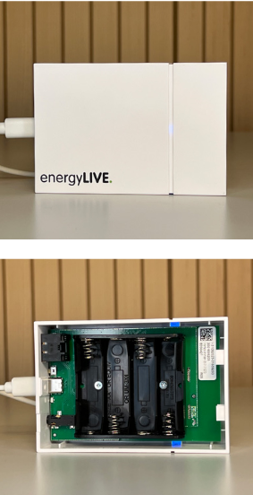
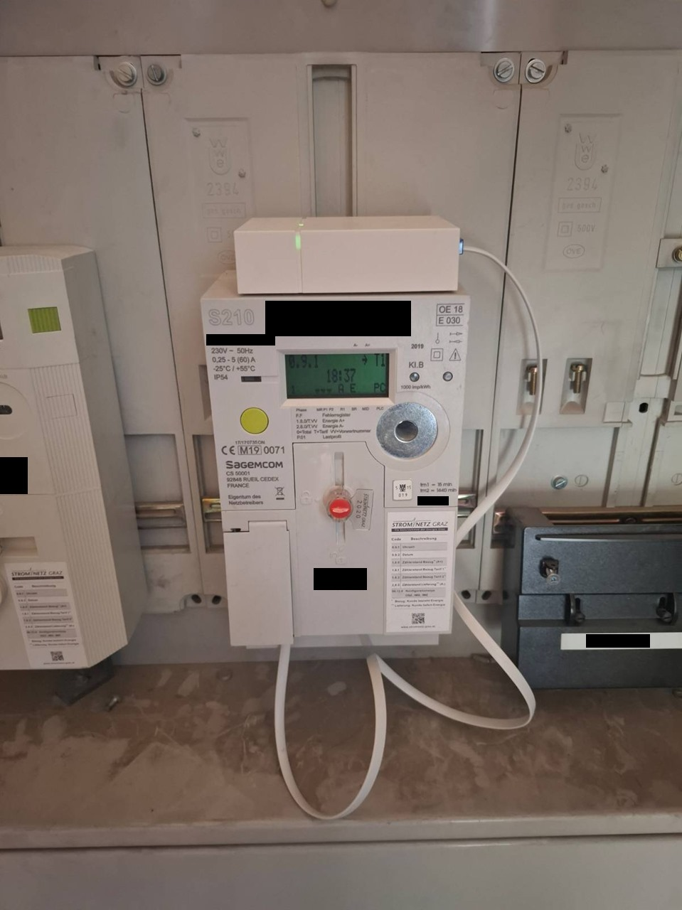

🔌 Verwendete Komponenten zur Energieerfassung
Implementierung & Messaufbau
Experimentelles Artefakt: Architektur und Messaufbau sind dokumentiert und für akademische Replikation ausgelegt.

Nous A5T Tasmota
• Art der drahtlosen Übertragung: 2,4 GHz
• Protokoll: IEEE 802.11b/g/n
• MQTT Protokoll
• Firmware-Anpassung: tasmota.github.io notwendig für IoT-Anbindung
• Art der drahtlosen Übertragung: 2,4 GHz
• Protokoll: IEEE 802.11b/g/n
• MQTT Protokoll
• Firmware-Anpassung: tasmota.github.io notwendig für IoT-Anbindung

HPE ProLiant DL380 Gen9 2U
• Mailserver
• DNS Server
• Fileshare
• Proxmox für VMs
• Mailserver
• DNS Server
• Fileshare
• Proxmox für VMs
📡 energyLIVE – Smart Meter Anbindung
Anschluss & Übertragung
Messszenarien: CPU-Stress, I/O-Stress, Reboot, Wartung, Idle – alle Szenarien sind dokumentiert und im Dashboard visualisiert.

Anschlussmöglichkeiten am Smart Meter:
• Optische Schnittstelle
• MBus Kabel
• P1 Kabel (Kabellänge jeweils 1 m)
Netzwerkverbindung:
• WiFi 2,4 GHz
• LoRa P2P 868 MHz
Sendet Verbrauchswerte:
• Alle 10 Sekunden
• Optische Schnittstelle
• MBus Kabel
• P1 Kabel (Kabellänge jeweils 1 m)
Netzwerkverbindung:
• WiFi 2,4 GHz
• LoRa P2P 868 MHz
Sendet Verbrauchswerte:
• Alle 10 Sekunden

Sagemcom T210
• P1 Anbindung
• kein Gateway notwendig
• WiFi 2,4 GHz
• P1 Anbindung
• kein Gateway notwendig
• WiFi 2,4 GHz
Flowchart (PlantUML)
⚡ Demo: Systemarchitektur
Architekturüberblick (draw.io)

Architektur-Komponenten (AWS & IoT):
| Komponente | Beschreibung | |
|---|---|---|
| Nous A5T Tasmota | Smarte Steckdose zur Energieverbrauchsmessung (IoT-Gerät) | |
| Energy Live API | Echtzeit-Energiedatenquelle | |
| EPEX Spot | Marktpreis-Datenquelle (Strombörse) | |
| AWS Lambda | Serverlose Funktionen für Datenerfassung und -verarbeitung | |
| Amazon DynamoDB | NoSQL-Datenbank zur Speicherung der Energiedaten | |
| Amazon IoT Core | IoT-Geräteverwaltung und MQTT-Messaging | |
| Amazon EventBridge | Zeitgesteuerte Ereignisauslösung | |
| Amazon CloudWatch | Logging und Monitoring | |
| AWS IAM | Identitäts- und Zugriffsmanagement | |
| AWS CloudFormation | Infrastructure as Code für IoT-Authentifizierung | |
| Amazon S3 | Datenspeicherung und Exporte | |
| Amazon Athena | SQL-Abfragen für Datenanalyse | |
| AWS Glue | Datenkatalog und ETL-Service | |
| Amazon QuickSight | Business Intelligence und Analytics Dashboard |
Alle Komponenten sind modular und für akademische Replikation dokumentiert.